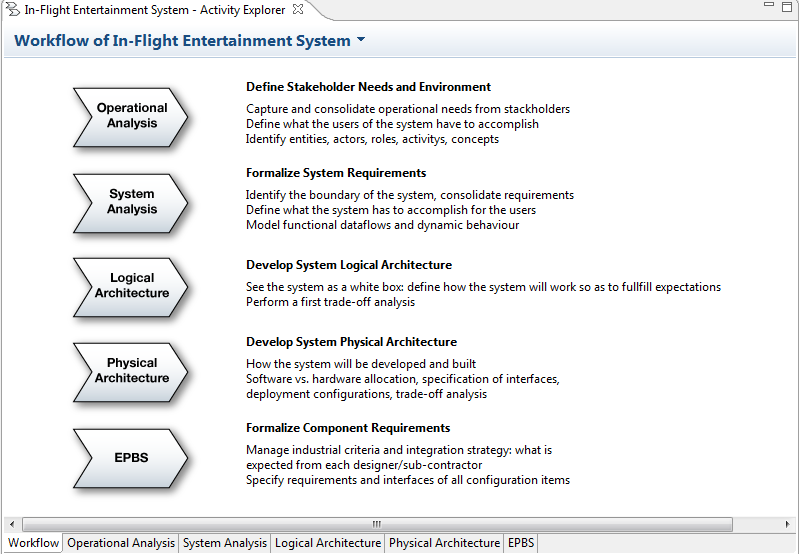
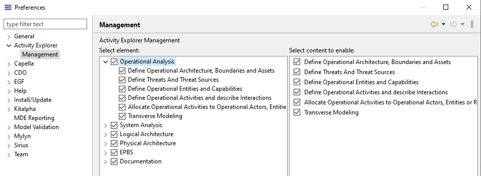

The Activity Explorer provides a methodological access to all key activities in Capella. The Activity Explorer is displayed automatically each time a Capella model is opened. It can also be launched with the contextual menu.

|
|
The Activity Explorer is the main interaction point with a Capella model. |
After selecting one of the Arcadia perspective, it allows to:
Despite Capella comes with a strong methodological background, it is often necessary to customize the modelling strategy and objectives for a given system. It is therefore possible to customize the activities appearing on the Activity Explorer, using below Capella Preferences.
